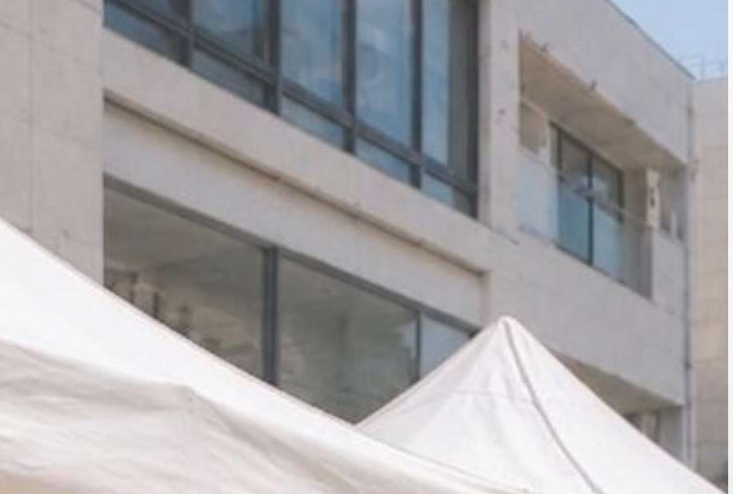

Iconic Shizuoka 2026 とは
About挑戦の１ページを彩る
静岡の高校生・大学生に地元の魅力を五感で体験してもらうイベントです。出店者様の「挑戦の１ページ」を若者に届け、静岡への誇りと繋がりを生み出します。
- 開催日
- 2026年10月11日（日）・12日（月・祝）
- 時間
- 11:30 – 17:00
- 会場
- 呉服町通り（静岡市葵区）
- 目標来場者数
- 30,000人
- 主催
- I see's（Iconic Shizuoka 2026 実行委員会）
募集内容
Who we're looking forこんな方を募集しています（約30組）
はじめて出店に挑戦する方
物販 3〜6組 ／ 出店料：無料
※ Iconic Shizuoka への出店経験ではなく、イベント・マルシェへの出店自体が初めての方が対象です。
学生出店者
先着3組・希望制 ／ 出店料：無料
静岡の新しい側面を持つ方
飲食 14〜16組 ／ 物販 5〜7組
応募対象：「Iconic Shizuoka 2026」の趣旨にご賛同いただける県内の方・法人
ただいま随時受付中です。枠が埋まり次第、締め切ります。写真・紹介文は出店決定後にご提出いただきます。
出店料
Fee| 区分 | 料金（1日あたり） |
|---|---|
| 飲食出店者様 | 3,000円2日間出店の場合は6,000円 |
| 物販出店者様 | 2,000円2日間出店の場合は4,000円 |
| 初出店者様 / 学生枠 | 無料 |
出店料は現金のみとなります。イベント終了後、本部にてお支払いください。
「初出店者様」とは、イベントやマルシェへの出店自体が初めての方を指します。他イベントでの出店経験がある方は通常の出店料が適用されます。
ブース仕様・備品
- ブースサイズ
- 最大 3m × 3m原則、1出店者様につき1小間
- テント
- 5,000円貸出
- 長机
- 2,000円貸出
- アウトドアチェア
- 1,000円貸出
備品の貸出はイベント初出店者様を優先させていただきます。テント等を各自でご用意いただくことも可能です。
来場者の購買導線
Customer flow- 割引券の配布
- 商品購入
- ラッキードロー参加
1,500円（1,000円以上）のお買い上げでガチャガチャに参加できます。景品は静岡にゆかりのある豪華景品をご用意します。
運営から出店者様へのSNS紹介（昨年インサイト30万以上）もあります。
割引券については、後日精算も含めて追ってご説明いたします。
当日の流れ
Timetable- 07:30 –
搬入① 7:30〜8:15 ② 8:30〜9:15 ③ 9:30〜10:00（各10店舗）
- 09:45
挨拶
- 10:15
全体最終確認・写真撮影
- 11:00
オープニングセレモニー
- 11:30
イベントスタート
- 17:00
イベント終了・搬出準備
- 17:30 –
搬出① 17:30〜17:50 ② 17:50〜18:10 ③ 18:10〜18:30（各10店舗）
- 18:30
完全撤収
搬入・搬出の希望時間は応募フォームにてお選びください。
周辺駐車場案内
Parking会場（呉服町通り）からの近さ順に10箇所をご案内します。ピンをタップすると詳細が表示されます。
イベント当日は満車が予想されます。できるだけ公共交通機関のご利用をおすすめします。
会場 徒歩3分以内 徒歩5分以内 徒歩8分以上
| # | 駐車場名 | 会場から | 台数 | 料金目安 |
|---|---|---|---|---|
| 1 | GSパーク 静岡追手町 Googleマップ | 約58m徒歩1分 | — | 30分300円夜間最大600円 |
| 2 | 呉服町タワーパーキング Googleマップ | 約157m徒歩2分 | 445台 | 30分250円 |
| 3 | 三井のリパーク 静岡呉服町1丁目 Googleマップ | 約160m徒歩2分 | 35台 | 最大 昼1,900円夜間最大600円 |
| 4 | APパーク1（追手町） Googleマップ | 約219m徒歩3分 | — | 15分100円夜間最大1,000円 |
| 5 | 稲森パーキング追手町 Googleマップ | 約234m徒歩3分 | 27台 | 15分100円夜間最大1,000円 |
| 6 | 名鉄協商パーキング 静岡呉服町 Googleマップ | 約238m徒歩3分 | 4台 | 40分200円最大 昼1,200円 / 夜400円 |
| 7 | 静岡呉服町スクエア駐車場 Googleマップ | 約266m徒歩4分 | 172台 | 60分400円最大 平日1,000円 / 休日700円 |
| 8 | スペース 静岡常磐町第1 Googleマップ | 約268m徒歩4分 | — | 30分200円平日最大1,100円 |
| 9 | NPD松坂屋前パーキング Googleマップ | 約665m徒歩8分 | — | 30分300円最大 平日1,300円 / 休日1,800円 |
| 10 | パークワン静岡駐車場 Googleマップ | 約667m徒歩8分 | — | 20分150円最大 平日1,000円 / 休日1,200円 |
料金・台数は変動する場合があります。最新情報は各駐車場でご確認ください。
当日の持ち物・準備事項
Checklist- テント・机・椅子（貸出利用の場合は応募フォームで申込）
- おもり（柱1本につき20kg以上を目安・強風対策として必須）
- 各店名の表示板（立看板は店前50cm以内 / テントより高いのぼり旗等は禁止）
- 消火器（火器を使用する場合のみ）
- 花瓶または花を置けるもの 【フラワーストリート企画へのご協力をお願いします】当日の会場（呉服町通り）を花で彩る「フラワーストリート」企画を実施します。各出店者様のブースに花を飾ることで会場全体を華やかに演出するイベント内企画です（企画書参照）。ぜひご協力ください。
- 【食品出店者】保健所への届出・保険加入等（各自でご対応ください）
会場使用に関する規約
Terms of use- 当日は主催者の判断を優先させていただきます。
- 出展ブースの配置は主催者に一任いただきます。（競合する出店同士の場合はブースを離す等の対応を取ります）
- 各店名の表示板は出店者でご準備ください。立看板等は店前から50cm以内とし、テントより高いのぼり旗・店名等の設置は禁止です。
- 会場内の調理行為・火器の使用は可能です。ただし、消火器をご用意ください。
- 排水が出る場合は食べ残し・飲み残しを含めお持ち帰りいただきます。
- 酒類を扱う場合は未成年への販売禁止および過度な飲酒につながる販売はお控えください。
- 食品提供においては食中毒発生防止の措置（保健所届出・保険加入等）は各自でお取りください。
- テントや看板の強風対策は各自でお願いします。
- 営業・販売・PR行為は会場敷地内でお願いします。
- イベント終了後はブース内の清掃・原状復帰をお願いします。
- 会場敷地内は禁煙です。指定の喫煙所をご利用ください。
- ブース内の備品・貴重品の管理は出店者各自でお願いします。紛失・破損・盗難等の責任は負いかねます。
- 写真・動画撮影があります。SNS等にアップする場合は撮影対象者の許可を必ず取るようお願いします。
販売禁止商品
- 動物・化粧品・医薬品
- 危険な刃物類・モデルガン
- アダルト関連・盗品
- ブランド造品・複製ソフト
- 政治・宗教活動に関わる商品・勧誘等
キャンセル・中止について
- キャンセルされる場合は、前日までに事務局へメールまたはお電話でご連絡ください。
- 当日体調不良の場合は無理せず出店をお控えください。その際は速やかにご連絡ください。
- 小雨決行。荒天（警報レベルの風雨）の場合は延期とします。
- 台風・暴風・暴雨・雷等の警報発令、熱中症・食中毒の集団発生等、実行委員会が実施不可能と判断した場合はマルシェの全部または一部を中止・一時中断します。
- 中止・延期によって生じた損害について、実行委員会は補償しません。
お問い合わせ
Contact- 代表
- 樋川 翔
- 副代表
- 石川
- マルシェ担当部長
- 大村
事故防止及び公衆衛生のための措置に関する事項
I see's（Iconic Shizuoka 2026）では、来場者、出店者、出演者及び運営スタッフ等、すべての関係者が安全かつ安心して参加できるイベント運営を行うため、事故防止及び公衆衛生の確保に努めます。また、関係法令並びに行政機関等の指導に基づき、適切な安全管理及び衛生管理を実施いたします。
事故防止対策
- 会場内の通行スペースを十分に確保し、来場者動線の整理を行います。
- 混雑が予想される箇所については、必要に応じて運営スタッフを配置し、来場者誘導を実施します。
- 会場設営時に危険箇所の確認を行い、転倒事故等の未然防止に努めます。
- テント、看板その他設営物については、強風等による転倒・飛散防止のため適切な固定を行います。
- 事故、急病その他緊急事態発生時に備え、運営スタッフ間の連絡体制を整備します。
- 来場者等の体調不良や負傷が発生した場合には、速やかに救護対応を行うとともに、必要に応じて消防、警察及び医療機関へ連絡します。
- 荒天、強風、災害その他安全な運営が困難と判断される場合には、イベント内容の変更又は中止等の措置を講じます。
感染症対策
- 発熱その他体調不良が認められる場合には、来場及び参加の自粛を呼びかけます。
- 必要に応じて会場内の換気を実施します。
- 社会状況等に応じて、行政機関等の指導に基づき適切な対応を行います。
食品衛生対策
- 保健所等関係機関の指導に基づき、適切な衛生管理を徹底します。
- 食材の適切な温度管理及び衛生管理を徹底します。
- 調理従事者に対し、手洗い及び衛生管理の徹底を求めます。
- 食品の長時間放置を防止します。
- 食中毒その他衛生上の問題が発生した場合には、速やかに営業停止その他必要な対応を行います。
救護体制
- 会場内において救護対応可能な運営スタッフを配置します。
- 応急処置用品を準備し、必要に応じて速やかに救急要請を行います。
本内容については、社会状況、行政機関等の指導及び開催内容等に応じて適宜見直しを行います。

Entry
応募フォーム
出店区分に合わせてフォームをお選びください。フォームでは次の内容をおうかがいします。
- お店の紹介文
- 販売商品
- Instagram写真
- 出店場所の希望
- 搬入時間の希望
- 備品の貸出希望
- アレルギー情報
どちらも別のタブで開きます